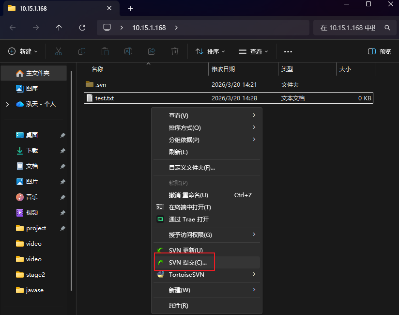
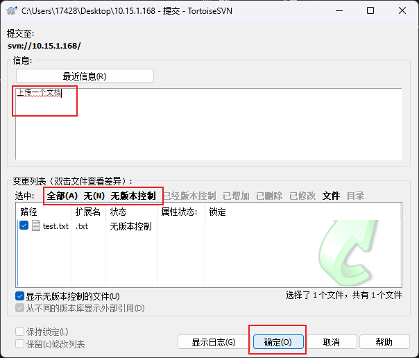
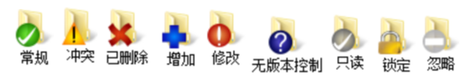
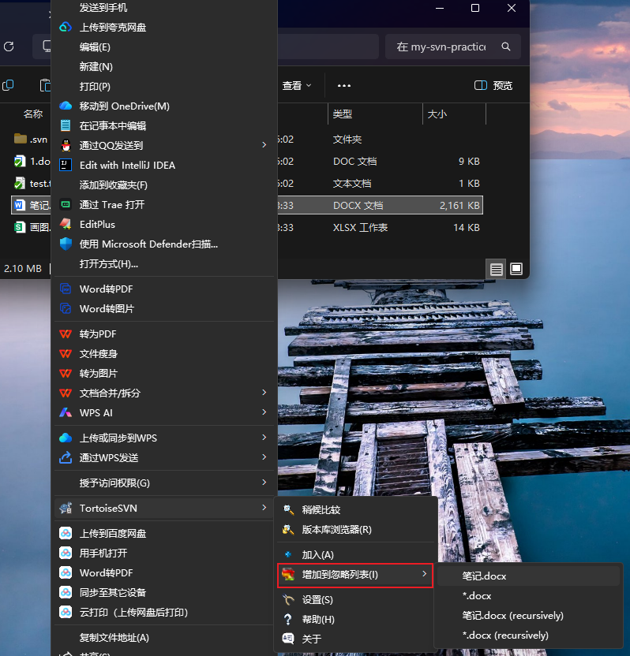
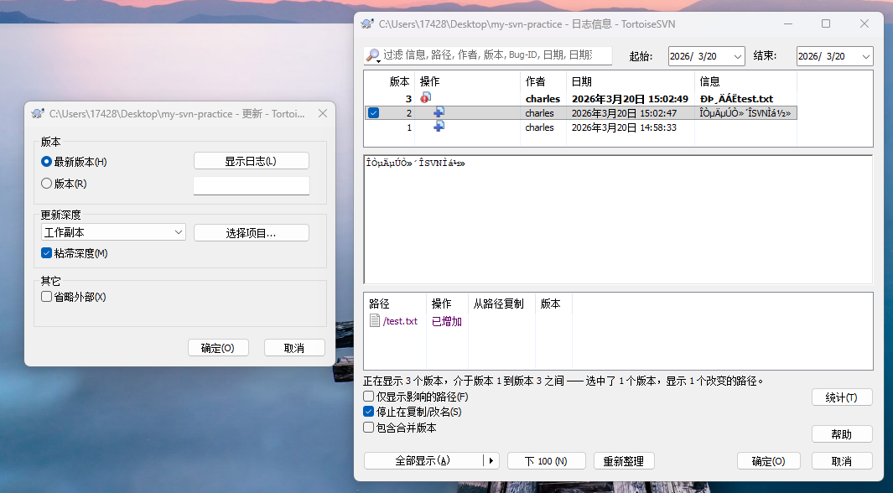

以上三个命令可以在右键菜单找到。 下边是各种使用powershell操作的记录，很类似git，要先add进去才能commit。gui版本就是选择内容commit，这其实包含了add操作。
# 1. 检出到新目录
svn checkout svn://10.15.1.168 ./my-svn-practice
# 2. 进入目录
cd ./my-svn-practice
# 3. 创建测试文件
echo "Hello SVN" > test.txt
# 4. 添加到版本控制
svn add test.txt
# 5. 提交
svn commit -m "我的第一次SVN提交"
# 6. 修改文件
echo "修改内容" >> test.txt
# 7. 查看状态
svn status
# 8. 再次提交
svn commit -m "修改了test.txt"

要选中某一个文件，然后找到忽略

在空白处鼠标右键，进入“更新至版本”

经过尝试。比如第一版有1.txt，第二版新增2.txt。第三版增加了3.txt但是还没提交。现在回退到第一版，2.txt就没了，刚创建的3.txt并不会被删除。
password-db = passwd
authz-db = authz
[aliases]
# 用户别名（可选），方便管理
alice = alice_has_a_long_long_name
[groups]
# 用户组定义
# 语法：组名 = 用户1,用户2,用户3...
backend = alice,bob
frontend = charlie,diana
qa = eve,frank
managers = grace,henry
all = @backend,@frontend,@qa,@managers # 组嵌套
[/] # 仓库根目录权限
# 权限语法：用户名或组名 = 权限
# 语法：[路径]
# 路径可以是：
# [/] - 仓库根目录
# [/trunk] - trunk目录
# [/branches/feature-1] - 具体分支
# [/tags/v1.0] - 具体标签
# ========================
# 实战案例
# ========================
# 案例1：管理员有完全访问权
@managers = rw
# 案例2：所有开发者可以读写主开发分支
[/trunk]
@backend = rw
@frontend = rw
- = r # 其他人只读
# 案例3：前端专属目录
[/trunk/src/frontend]
@frontend = rw
@backend = r
- = # 其他人无权限
# 案例4：后端专属目录
[/trunk/src/backend]
@backend = rw
@frontend = r
- = # 其他人无权限
# 案例5：数据库脚本只有后端DBA可修改
[/trunk/database]
bob = rw # bob是DBA
@backend = r
- = # 其他人无权限
# 案例6：测试目录
[/trunk/test]
@qa = rw # QA团队读写
@backend = rw # 开发可读写
@frontend = r
- = # 其他人无权限
# 案例7：公共文档目录
[/trunk/docs]
@all = rw # 所有人都可读写
- = r # 外部人员只读
# 案例8：配置文件目录（敏感）
[/trunk/config]
@managers = rw
@backend = r
- = # 其他人无权限
# 案例9：个人功能分支
[/branches/feature-login]
charlie = rw # 创建者有完全权限
@frontend = rw # 前端团队可协助
@backend = r
- = # 其他人无权限
# 案例10：发布标签目录
[/tags]
@backend = rw
@frontend = rw
@qa = rw
- = r # 所有人都可读标签
# 案例11：隐藏的管理目录
[/admin]
@managers = rw
- = # 其他人完全不可见
# 案例12：资源文件目录
[/trunk/assets]
@frontend = rw
@backend = r
@qa = r
- = r # 所有人可读资源
# 案例13：依赖库目录
[/trunk/vendor]
@backend = rw
@frontend = r
- = # 其他人无权限
# 语法：用户或组 = 权限
# 权限类型：
# r - 读取（read）
# w - 写入（write）
# rw - 读写（read/write）
# 空 - 无权限
# =* - 继承父目录权限（较少用）
# 示例：
alice = rw # 用户 alice 有读写权限
@backend = rw # backend 组有读写权限
@qa = r # qa 组只有读权限
- = r # 所有人有读权限
- = # 所有人都无权限（默认）
# ========================
# 重要提醒
# ========================
# 1. 权限从上到下匹配，先匹配的生效
# 2. 具体路径的权限会覆盖父路径权限
# 3. 用户权限会覆盖组权限
# 4. 默认情况下，没有明确权限的用户会被拒绝访问
# 5. 使用 * = 作为路径的默认拒绝规则
# 6. 保存后需要重启 svnserve 服务生效
svn checkout svn://10.15.1.168/shopsc create SVNService binpath= "D:\subversion\bin\svnserve.exe --service -r D:/svnroot" start= auto
#sc create 服务名称 binpath=空格"svnserve.exe –service –r D:/svn/WebApp" start=空格auto
net start 服务名称 # 启动服务
net stop 服务名称 # 停止服务
sc delete 服务名称 # 删除服务
所谓钩子就是与一些版本库事件触发的程序，例如新修订版本的创建，或是未版本化属性的修改。 默认情况下，钩子的子目录(版本仓库/hooks/)中包含各种版本库钩子模板。
PS D:\program\svnserver\app\webapp\shop\hooks> pwd
Path
----
D:\program\svnserver\app\webapp\shop\hooks
PS D:\program\svnserver\app\webapp\shop\hooks> ls
目录: D:\program\svnserver\app\webapp\shop\hooks
Mode LastWriteTime Length Name
---- ------------- ------ ----
-a---- 2026/3/20 13:43 2651 post-commit.tmpl
-a---- 2026/3/20 13:43 2780 post-lock.tmpl
-a---- 2026/3/20 13:43 3008 post-revprop-change.tmpl
-a---- 2026/3/20 13:43 2609 post-unlock.tmpl
-a---- 2026/3/20 13:43 4051 pre-commit.tmpl
-a---- 2026/3/20 13:43 3690 pre-lock.tmpl
-a---- 2026/3/20 13:43 3516 pre-revprop-change.tmpl
-a---- 2026/3/20 13:43 3370 pre-unlock.tmpl
-a---- 2026/3/20 13:43 3763 start-commit.tmpl
如何为服务器创建一个，客户端有人commit，服务器就能自动预览的脚本呢。
在同级目录创建post-commit.bat，指定svn可执行文件路径，指定要同步到的地方，并且写好update指令。
SET SVN="D:\program\svnserver\app\bin\svn.exe"
SET DIR="D:\program\svnserver\shop_auto"
%SVN% update %DIR%
请注意，等号左右两边不能有空格！！另外SVN和DIR都需要百分号包围！！